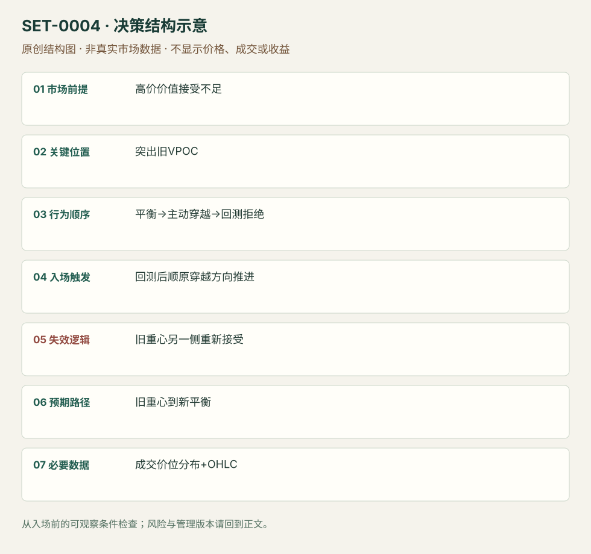

显著成交重心跌破后的回测延续
Prominent VPOC Flip · SET-0004 · reviewed · v1.0.0
盈利证据：not_established。审查范围与来源版本见第13节；未知字段保留缺失原因。
1. 名称与快速概览
更高价位未获持续价值接受，平衡日形成显著VPOC；当开盘主动跌破重心，等待回测不能重新站稳再考虑顺向延续。重新建立重心上方平衡将否定翻转假说。
记录口径：PA supporting；必要数据 OHLC、volume_at_price、session_profile。名称性质：来源术语或研究术语。reviewed 只表示本条规则与证据记录审查通过，盈利状态为 not_established。
2. 本质与行为假说
可见证据是先前价位成交分布、开盘方向和重心的穿越/回测。AXIA将价值无法跟随价格上涨视为接受不足；这不是只在任意POC附近机械做空，也不能把当日最终POC倒填成事前水平。
3. 适用市场与环境
背景来自数周Bund结构：下移价格未带动价值，随后回升又未能维持高位；右肩平衡留下清楚的成交重心。宏观背景可以跨日观察，执行和退出保持日内。单纯孤立POC而无背景不足。
来源实用市场：Bund期货（AXIA）。
Session：Bund现金参考段；原文未提供精确执行时区和分钟。使用者应固定Europe/Berlin的现金开盘参考，期货完整session另记；本库要求当日退出。
跨市场：本版不主张已经验证的跨市场迁移；更换市场必须重定数据来源、流动性与session。
4. 出现前的观察清单
必要：事前冻结参考session与显著VPOC；记录高价未持续接受；已看到主动开盘走弱。增强：区间下边缘也被突破。否决：VPOC仍在形成但被当成最终值、价位反复无方向穿越、只有头肩图形没有分布证据。
5. 形成过程与状态转换
背景价值拒绝 → 平衡与突出重心 → 开盘向下主动流 → 价格跌破 → 回测重心并失败 → 延续；触发前若回测重新在上方成交并形成平衡，撤销。
6. Entry trigger 与执行方式
来源有两个版本：主动版用重心跌破并结合Initial Balance突破；被动版等待跌破后回到VPOC。这条主记录选择被动版，触发是回测后再次向下推进。主动版是variation，不能把二者成交优势混合。
7. Invalidation 与止损逻辑
分析失效：不再是阻力的重心重新被上方接受。研究管理模块：保护单在回测结构高点之外，并以重心上方持续成交作为重审依据；原文没有给出通用tick数或等待分钟数。
8. Exit、target 与 trade management
使用当时可见的下一段平衡边缘、低量区域出口或旧低点；若在新低位建立平衡则降低延续预期。来源强调访问交易思路，不给统一目标或实盘成交流水；止盈参数须另测。
9. 常见 variations
主动穿越与被动回测属于执行版本；成交Profile和TPO不能直接互换VPOC定义。把任意移动POC反复穿越也叫flip会丢失“显著旧重心＋背景拒绝”的前提。
10. 失败方式与不交易条件
正常亏损：回测短暂拒绝后重建上方价值。未成立：没有事前重心或把POC当作万能阻力。偏离：追随已经远离VPOC的下跌。数据错误：合约换月、session划分或成交分布计算不同。
11. 与相近 setups 的区别
12. 图表与案例解读
已查看原文“Day trading VPOC”下的vpoc_flip图：红箭头标旧重心，现金开盘前已在其下，随后形成低位蓝框平衡。价格图没有清晰可核对交易日期与周期，故不补猜。图中的清算解释属于作者假说，图表本身不证明持仓身份。
- [VIS-000003] Bund价格跌破旧VPOC后在较低区域形成新平衡；定位：原文Day trading VPOC节，vpoc_flip图红箭头与Cash open标记。红色水平箭头是事前参考；右下蓝框是后续展开，不能用于设定入场前目标。 验证：chart_viewed。

本地原创示意（VIS-000061，非真实市场数据）：

小屏阅读可打开原尺寸示意图并缩放。

此图用于对照识别顺序与风险定义；不计入真实案例覆盖率。
视觉材料元数据与查看范围
- VIS-000003 · real_source_chart / structure_and_trigger / chart_viewed
品种：Bund；日期：未知/不适用；周期：未知/不适用；时区：未知/不适用
日期、周期与时区无法清晰核对；未核对实际成交 - VIS-000061 · synthetic_structure_diagram / illustration_only / generated_not_market_evidence
品种：未知/不适用；日期：未知/不适用；周期：未知/不适用；时区：未知/不适用
无真实品种、日期或价格：这是结构示意
13. 证据、分歧与未知项
单一来源族，背景、水平与主动/被动访问有直接支持。止损订单与目标具体化属于研究补充，尚无统一执行阈值。未证明VPOC翻转本身有正期望。
- [EVD-000005] Axia Futures，《Day Trading VPOC and Market Profile》，SRC-0004；定位：Market Analysis、Day trading VPOC及Trading Summary。支持：高价价值接受不足、显著旧VPOC、开盘走弱；主动穿越或被动回测
审查例外：此条只有一份富信息原始资料，足以还原本条规则；独立佐证有限，未用背景页冒充第二份核验。后续优先寻找独立规则/失败案例。
14. 可用于复盘的检查表
- ☐ 下单前的前提可核对：高价价值接受不足
- ☐ 事前标记位置：突出旧VPOC
- ☐ 行为按顺序出现：平衡→主动穿越→回测拒绝
- ☐ 实际触发符合选定版本：回测后顺原穿越方向推进
- ☐ 事先写明本次否定条件：旧重心另一侧重新接受
- ☐ 目标/路径只用当时已知信息：旧重心到新平衡
- ☐ 数据满足 成交价位分布+OHLC；记录时间、点差、滑点、队列和未成交
- ☐ 记录截止平仓及规则偏离；正常亏损不事后改成“未成立”
15. 后续验证问题
预定义显著重心与接受所需时间/成交量，冻结参考session避免前视；比较主动与被动版的未成交率及成本。检验按背景价值拒绝分层后POC是否有额外信息。
双向相关导航
- SET-0010 突破后首次回测守住旧边界 普通突破回测只需价格边界；本条还需事先可识别的成交重心和高价接受不足。
- SET-0035 IB 首侧失败后的反侧突破与回收 价值迁移延续要求新成交区建立；本条交易旧重心角色变化。
- SET-0037 旧价值区重新接受后的横穿 0004 旧VPOC被方向性突破并形成外部新价值；本条在旧价值内得到接受。
本条来源：SRC-0004